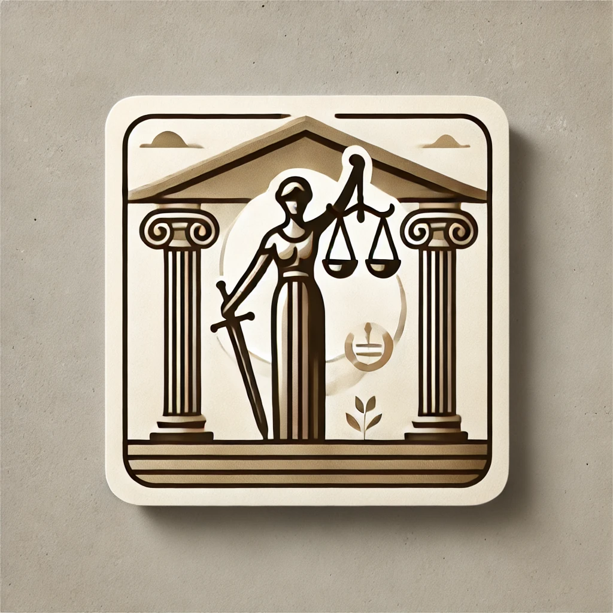
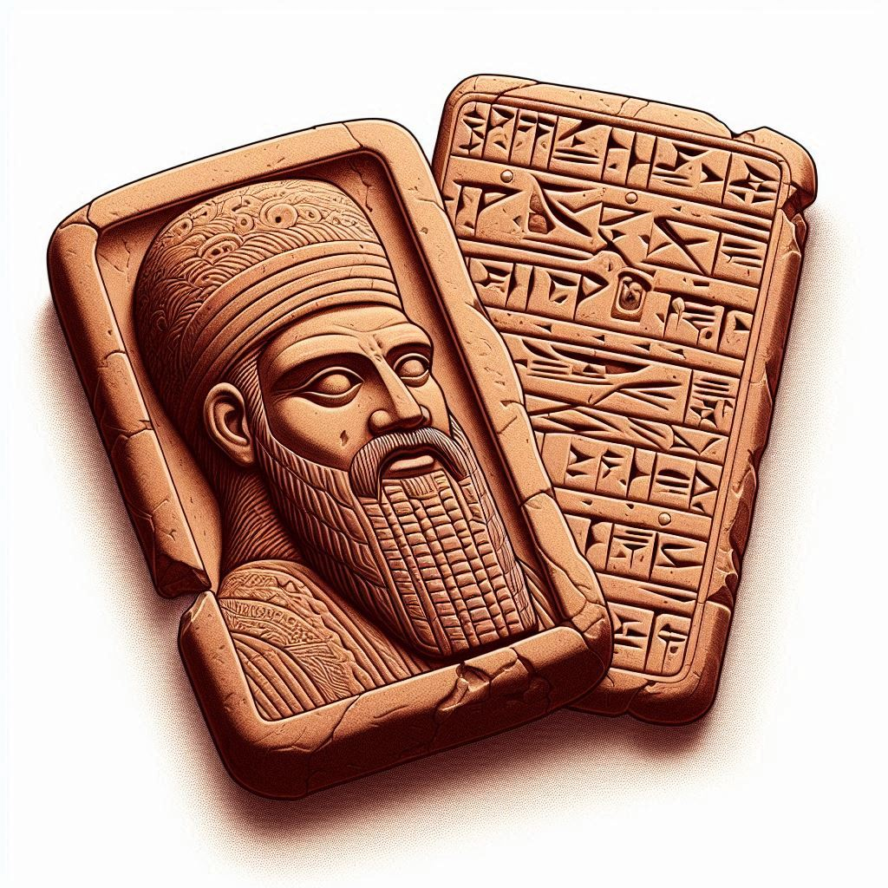
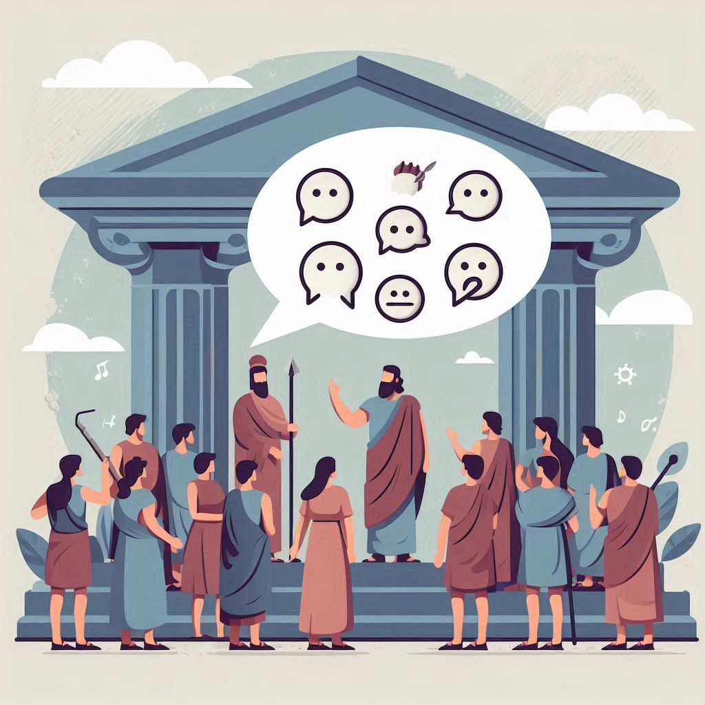

Bu web sitesi, Eski Çağ medeniyetlerindeki yazılı ve yazısız hukuk sistemlerini karşılaştırarak, hukukun toplumsal yapıya etkilerini incelemeyi amaçlamaktadır.

Yazılı Hukuk Kuralları
Yazılı hukuk, belirli kuralların resmi olarak belgelenmesiyle oluşur. Eski Çağ'da bu sistemin temel örnekleri:
Hammurabi Kanunları - Babil İmparatorluğu
12 Levha Kanunları - Roma İmparatorluğu
Hitit Kanunları - Hitit Medeniyeti

Yazısız Hukuk Kuralları
Yazısız hukuk, toplumun gelenek ve göreneklerine dayanan sözlü kurallar bütünüdür. Örnekler:
Örf ve Adetler
Ahlaki Kurallar
Sözlü Anlaşmalar

Yazılı ve Yazısız Hukukun Karşılaştırması
Özellikler
Yazılı Hukuk
Yazısız Hukuk
Belgelendirme
Resmi Metinler
Sözlü Gelenek
Değişim Hızı
Daha Yavaş
Daha Hızlı
Uygulama Alanı
Genel ve Evrensel
Bölgesel ve Yerel
Toplumsal Etki
Sabit Kurallar
Esnek Kurallar
Hukukun Toplumsal Yapıya Etkileri
Hukuki düzenlemeler, toplumsal yapının şekillenmesinde kritik bir rol oynamıştır. Etkileri:
Sosyal Düzenin Sağlanması
Adalet ve Eşitlik İlkelerinin Benimsenmesi
Ekonomik ve Ticari İlişkilerin Düzenlenmesi
Sınıf ve Tabakalaşmanın Oluşumu
Hakkımızda
Bu web sitesi, Eski Çağ hukuk sistemlerini incelemek ve paylaşmak amacıyla hazırlanan bir proje çalışmasıdır.